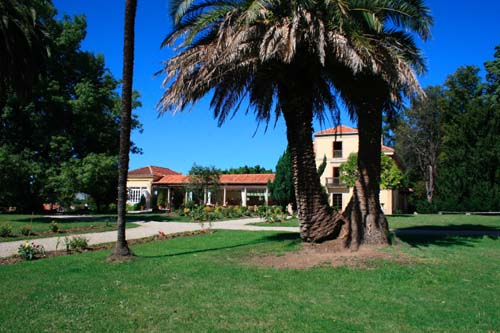
YNFANZÓN 2006

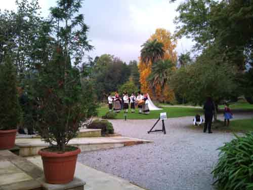
OTOÑO 06
A parte de la casa, la quinta está formada por una finca de casi cien mil metros cuadrados compuesta de pradería y vetusto arbolado autóctono, si excluimos a "Carlitos" un anciano eucalipto de gran tamaño situado en el linde con la carretera del camping y al cañaveral de bambú que, situado a la vera del aparcamiento, es uno de los mayores de Asturias (sería pretencioso decir que es el mayor aunque...) con cañas que alcanzan fácilmente perímetros de 20 centímetros. Ardillas y todo tipo de pájaros campean (y se almuerzan entre sí) en estos ambientes donde a veces vienen de visita "melandros", zorros, "fuinas" y alguna que otra alimañeja de los contornos.

Frente a la casa se extiende el jardín principal compuesto de dos caminos concéntricos que se juntan en la terraza y encierran cuatro praditos, hoy de verde pero que en un futuro se irán vistiendo con flores y complementos vegetales para acercarse al estilo de antaño.
VIAJE FOTOGRÁFICO POR EL TIEMPO
YNFANZÓN 1926


YNFANZÓN 1952


FRENTE CAMINO CEREZOS
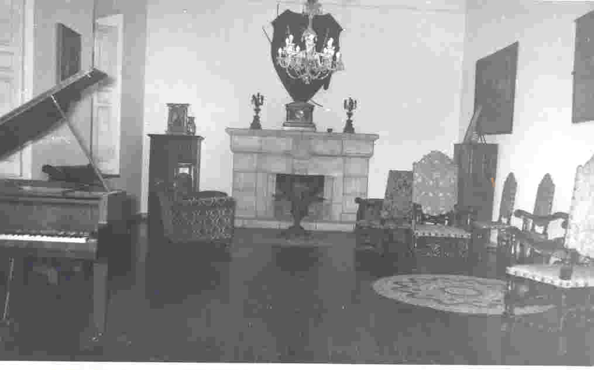 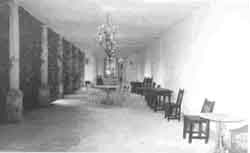 
SALÓN MÚSICA GALERÍA FUENTE
YNFANZON 1962
 |
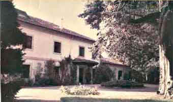
|
 |

YNFANZON ACTUAL
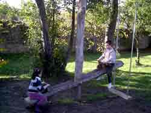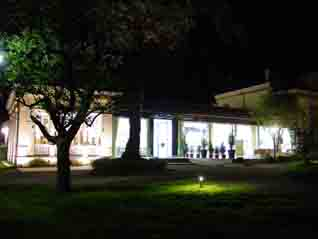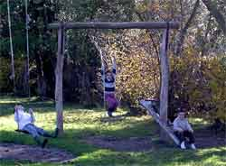
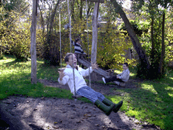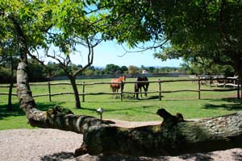
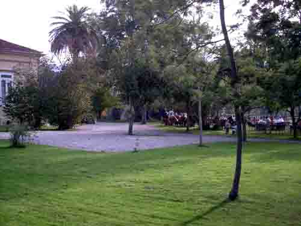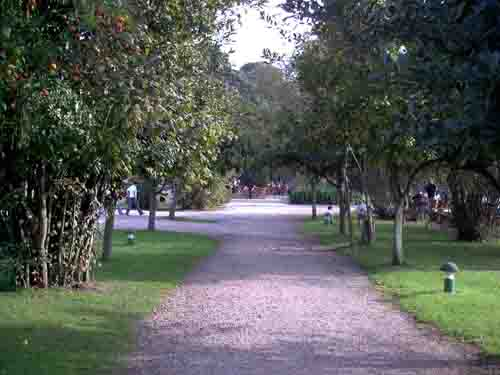
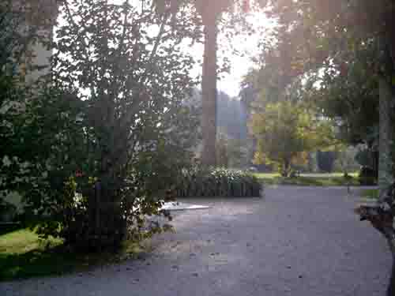
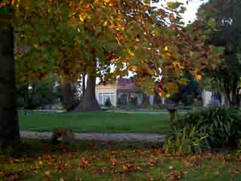
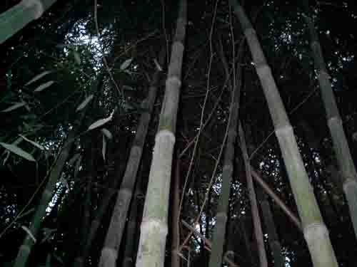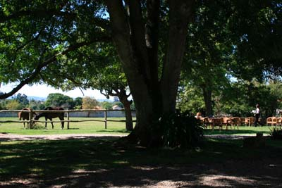

E....... Bueno, yo... ¡Ah! pasaba por aquí y... es que la Gomita empezó a comerme la oreja...